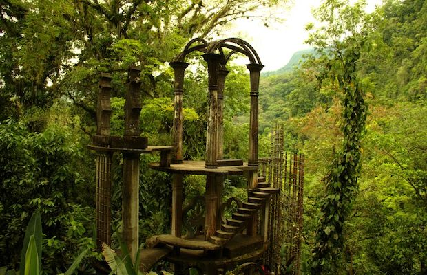
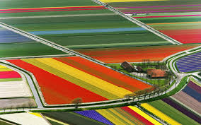

These are some of my favorite places, and WHY

- Xilitla
- Feels like magic!
- You can climb the stairs to the clouds!
- Lots of nature and mystical scenery!
Delicious food!
- Best string cheese
- Tacos
- Tamales
- Pozole de cacao

- Amsterdam
- My home town!
- Annual cheese festival
- Tulip fields look awesome from the airplane window
- The people are really nice
Delicious food!
- Croquettes
- Friet met Sambal
- Frikandel speciaal